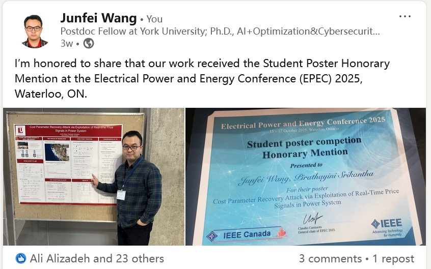
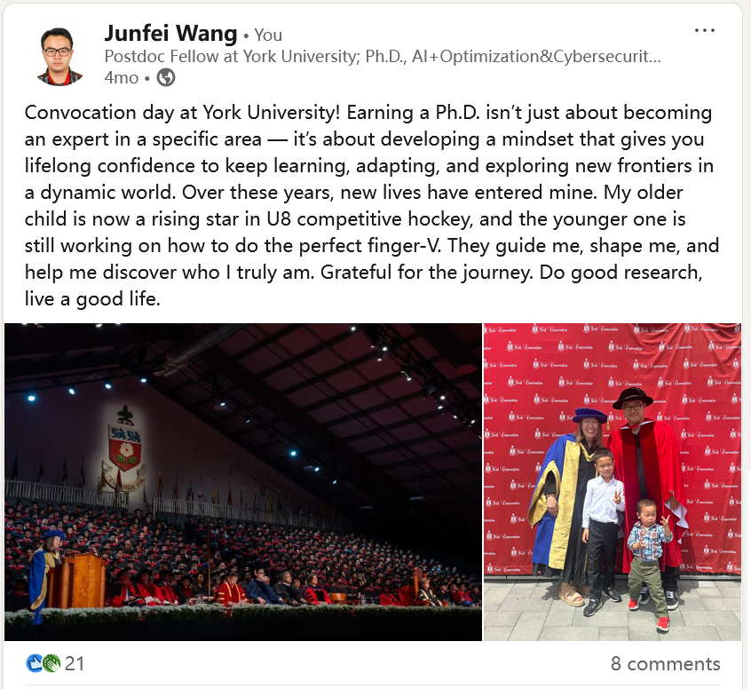

Research
I am currently a postdoctoral fellow at EECS department, York University. My research interest lies primarily in the areas of electrical engineering, smart grid, data-driven modeling and optimization, and integration of renewable energy in power system.
Selected Publications
- “Fast optimal power flow with guarantees via an unsupervised generative model”, IEEE Transactions on Power Systems, 2022.
- “Stealthy black-box attacks on deep learning non-intrusive load monitoring models”, IEEE Transactions on Smart Grid, 2021.
- “Synthetic Power Flow Data Generation Using Physics-Informed Denoising Diffusion Probabilistic Models”, IEEE SmartGridComm, 2025.
- “Generator Cost Coefficients Inference Attack via Exploitation of Locational Marginal Prices in Smart Grid”, IEEE SmartGridComm, 2025.
awards
- Student Poster Honorary Mention, IEEE Electrical Power and Energy Conference (EPEC), 2025.
- Mitacs Postdoc Funding, 2025.
- Academic Excellence Award, York University, 2024.
News

Student Poster Honorary Mention — IEEE Electrical Power and Energy Conference (EPEC), 2025.

Conference Volunteer — IEEE SmartGridComm Conference, 2025.

Received Ph.D. — Thesis titled “Data-driven Methods for Optimal Power Flow in Smart Grid”, September 2024.
Contact
Email: jwan577@yorku.ca
Google Scholar: All My Publications